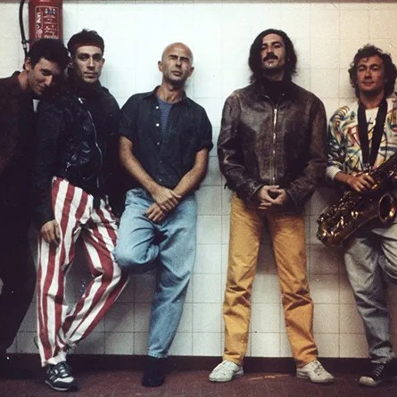

Noticias

El nacimiento de Patricio Rey
Publicado el 29 de mayo, 2025La prehistoria de una leyenda, nacida en el under de las diagonales. El Pasaje Rodrigo, las primeras canciones y toques en bares, teatros y sótanos.

Un chancho puede comer un jamón
Publicado el 27 de mayo, 2025La mosca y la sopa, el álbum más categórico y a su vez más polémico dentro la liturgia de Los Redondos, el de la interpretación casi posible y el dispar

El Sultán que cocinaba los redonditos de ricota
Publicado el 25 de mayo, 2025Se llamaba Edgardo Gauidini, alias «el Doce» y «el Sultán«, y fue parte de los inicios de cofradía artística que fue Patricio Rey y sus Redonditos de Ricota.
La última noche de los Redondos
Publicado el 24 de mayo, 2025Los motivos reales y profundos de la separación de Patricio Rey y sus Redonditos de Ricota.